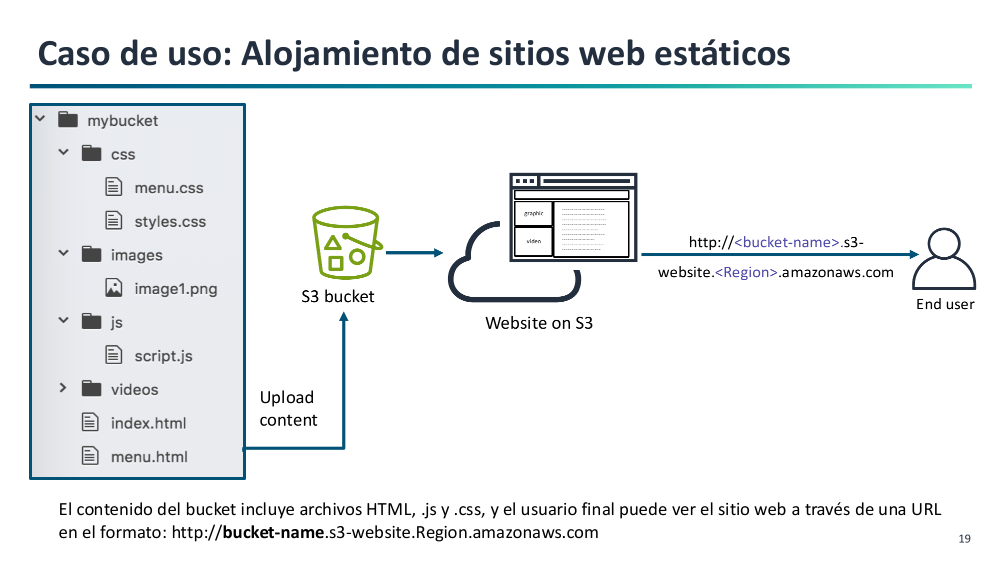

6. Alojamiento de Sitios Web Estáticos en Amazon S3¶
Amazon S3 permite alojar sitios web estáticos de alta disponibilidad sin necesidad de aprovisionar ni administrar servidores web como Apache o Nginx (RA2.f).
Contenido Estático frente a Dinámico¶

- Contenido soportado (Estático): Archivos HTML, hojas de estilo CSS, imágenes, fuentes, documentos y JavaScript del lado del cliente. Las aplicaciones SPA (Single Page Applications) desarrolladas con React, Vue o Angular son estáticas una vez compiladas y pueden alojarse íntegramente en S3.
- Contenido NO soportado (Dinámico): Lenguajes de ejecución del lado del servidor (PHP, Python/Django, Node.js, Java) o conexiones directas locales a bases de datos relacionales.
Configuración en 3 Pasos¶
Para publicar un sitio web en S3 es necesario realizar tres acciones:
-
Habilitar el alojamiento web estático:
- En la pestaña Propiedades (Properties) del bucket, activar Static website hosting.
- Indicar el Documento de índice (
index.html) y el Documento de error (404.html). - S3 generará el punto de enlace del sitio web (Endpoint).
-
Desactivar el Bloqueo de Acceso Público:
- En la pestaña Permisos (Permissions), desmarcar la casilla Block all public access para permitir que el bucket acepte políticas públicas.
-
Aplicar la Política de Bucket pública:
- Para evitar el error HTTP 403 Forbidden, se debe añadir una política en JSON que conceda permiso de lectura anónima sobre todos los objetos del bucket:
{
"Version": "2012-10-17",
"Statement": [
{
"Sid": "PublicReadGetObject",
"Effect": "Allow",
"Principal": "*",
"Action": "s3:GetObject",
"Resource": "arn:aws:s3:::NOMBRE-DEL-BUCKET/*"
}
]
}
Importante sobre el Resource
Fíjate en el comodín /* al final del ARN. El permiso s3:GetObject aplica a los objetos contenidos dentro del bucket, no al recurso raíz del bucket.
Endpoint Web vs. Endpoint de API REST¶
| Característica | Endpoint de Sitio Web | Endpoint de la API REST |
|---|---|---|
| URL típica | http://bucket.s3-website.eu-west-1.amazonaws.com |
https://bucket.s3.eu-west-1.amazonaws.com |
| Protocolo nativo | Solo HTTP (no ofrece HTTPS directo) | HTTP y HTTPS |
| Petición a la raíz | Carga automáticamente index.html |
Devuelve el listado XML de objetos |
| Recurso inexistente | Muestra la página web personalizada 404.html |
Devuelve un error XML estándar de AWS |
Despliegue en Producción con Dominio Propio y HTTPS¶
Dado que el endpoint nativo de S3 solo soporta HTTP y utiliza un dominio de Amazon, para entornos de producción profesionales se utiliza la siguiente arquitectura recomendada:
[Usuario Web] --(HTTPS Seguro / midominio.com)--> [Amazon Route 53] (DNS)
│
▼
[Amazon CloudFront] (CDN + Certificado SSL ACM)
│
▼ (HTTP / OAC)
[Bucket de Amazon S3] (Archivos Web)
- AWS Certificate Manager (ACM): Proporciona un certificado SSL/TLS gratuito para el dominio corporativo.
- Amazon CloudFront: Red de distribución de contenidos (CDN) que termina la conexión HTTPS segura en ubicaciones de borde cercanas al usuario y lee los archivos desde el bucket de S3.
- Amazon Route 53: Gestiona el DNS y redirige el dominio hacia CloudFront.